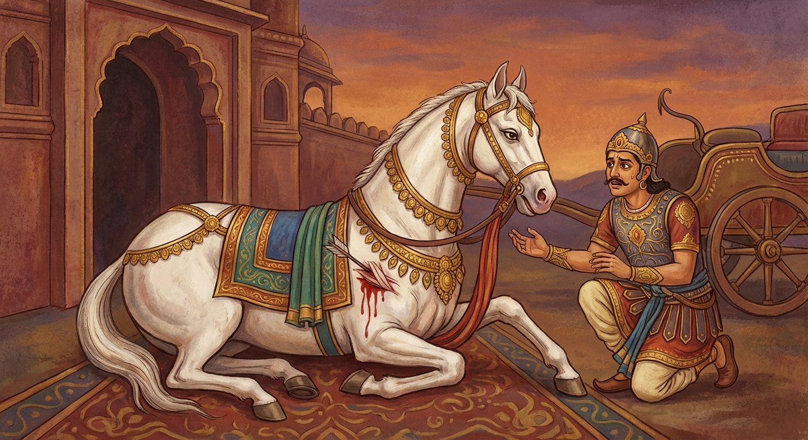

4. ආජඤ්ඤ ජාතකය (24)
“යදා යදා” (යම් යම් කලක) යන පදයෙන් ඇරඹෙන මේ ජාතක කතාව බුදුරජාණන් වහන්සේ ජේතවනාරාමයේ වැඩවාසය කරන සමයේ වීර්යය අත්හළ භික්ෂුවක් අරබයා දේශනා කළ සේක. බුදුරජාණන් වහන්සේ ඒ භික්ෂුව අමතා, “මහණ, පෙර පණ්ඩිතවරු නුසුදුසු තැන්හි පවා ප්රහාර ලැබූ නමුත් වීර්යය අත් නොහැර කටයුතු කළාහුය” යැයි වදාරා අතීත කතාව ගෙනහැර දැක්වූ සේක.
අතීතයේ බරණැස් නුවර බ්රහ්මදත්ත රජු රාජ්ය කරන කල්හි, පෙර කතාවේ පරිද්දෙන් ම රජවරු සත්දෙනෙක් නුවර වට කළහ. එවිට එක් රථ රණශූරයෙක් සහෝදර වූ සෛන්ධව අශ්වයන් දෙදෙනා රථයේ යොදාගෙන නගරයෙන් පිටත්ව ගොස්, සතුරු කඳවුරු හයක් බිඳ රජවරුන් සයදෙනෙකු අල්ලා ගත්තේය. ඒ මොහොතේ ජ්යෙෂ්ඨ අශ්වයා පහරක් ලැබීය. රියදුරු රථය පදවාගෙන රාජද්වාරය ළඟට පැමිණ, වැඩිමහල් සොහොයුරු අශ්වයා රථයෙන් මුදා, යුද සන්නාහය ලිහිල් කොට, එක පසෙකින් හාන්සි කරවා වෙනත් අශ්වයෙකු සන්නද්ධ කිරීමට පටන් ගත්තේය. බෝධිසත්ත්වයෝ එය දැක පෙර පරිද්දෙන් ම සිතා රථිකයා කැඳවා වැතිර සිටියදීම මේ ගාථාව වදාළහ.

“යම් යම් කාලයක, යම් යම් ස්ථානයක, යම් යම් මොහොතක, ආජානීය අශ්වයා තම වේගය පෙන්වයි ද (වීර්යය කරයි ද), එකල්හි සාමාන්ය අශ්වයෝ (වළවා) පිරිහෙති.”
“පෙරවරු ආදී යම් යම් කාලයක දී ද, මාවත හෝ යුද බිම ආදී තැනක දී ද, යම් මොහොතක යුද බලකොටු ආදී තැනක දී ද, ආයුධ ප්රහාරයක් ලැබුවත් නොලැබුවත්, ආජානීය අශ්වයා ම වේගය පෙන්වයි. වළවා අශ්වයා ආදී සෙසු අශ්වයෝ පිරිහෙති.”
එහි “යදා යදා” යනු පෙරවරු ආදී යම් යම් කාලයක ය. “යත්ථ” යනු යම් තැනක එනම් මාර්ගයේ හෝ යුද බිමෙහි හෝ ය. “යදා” යනු යම් මොහොතක ය. “යත්ථ යත්ථ” යනු සත්ත්ව බලකොටු මෙන් බොහෝ යුද බිම්වල ය. “යදා යදා” යනු යම් යම් කලෙක එනම් පහරක් ලද විට හෝ නොලද විට ය. “ආජඤ්ඤො කුරුතෙ වෙගං” යනු රියදුරුගේ සිත් කැමැත්ත දැනගන්නා ස්වභාව ඇති හෙයින් ආජඤ්ඤ නම් වූ උසස් කුල අශ්වයා වේගවත් වෙයි; වීර්යය අරඹයි. “හායන්ති තත්ථ වාළවා” යනු ඒ කුලවත් අශ්වයා වේගවත්ව ක්රියා කරන කල්හි, ‘වළවා’ නම් වූ දුබල අශ්වයෝ පිරිහෙති. එම නිසා මේ රථයෙහි මා යොදවන්න යැයි කීය.
රියදුරු බෝධිසත්වයන්ව නැගිටුවා රථයෙහි යොදා, හත්වන බලකොටුව ද බිඳ, හත්වන රජු ද අල්ලාගෙන, රිය පදවමින් රජ දොරටුව වෙත අවුත් සෛන්ධව අශ්වයා මුදා හැරියේය. බෝධිසත්ත්වයෝ එක් පසෙකින් වැතිර සිටිමින් ම, පෙර පරිද්දෙන් ම රජුට අවවාද දී මිය ගියහ. රජතුමා අශ්වයාගේ ශරීර කෘත්ය කරවා රියදුරුට සම්මාන දී, ධර්මානුකූලව රාජ්යය කරවා කම් වූ පරිදි මිය ගියේය.
බුදුරජාණන් වහන්සේ මේ ධර්ම දේශනාව ගෙනහැර දක්වා චතුරාර්ය සත්යය ප්රකාශ කළ සේක. දේශනාව අවසානයේ ඒ භික්ෂුව රහත් ඵලයෙහි පිහිටියේය. ශාස්තෲන් වහන්සේ ජාතකය ගළපා දැක්වූ සේක: “එකල රජු වූයේ දැන් මේ ආනන්ද තෙරුන් ය. අශ්වයා වූයේ සම්මා සම්බුදු වූ මම ය.”
සිව්වන වූ ආජඤ්ඤ ජාතක වර්ණනාව යි.